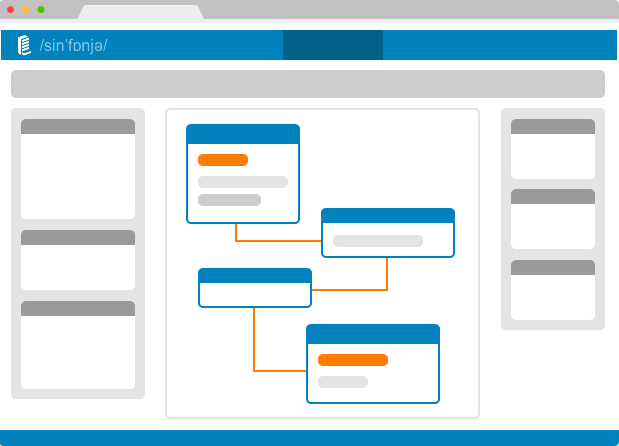
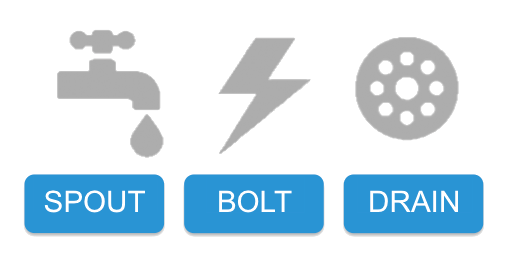
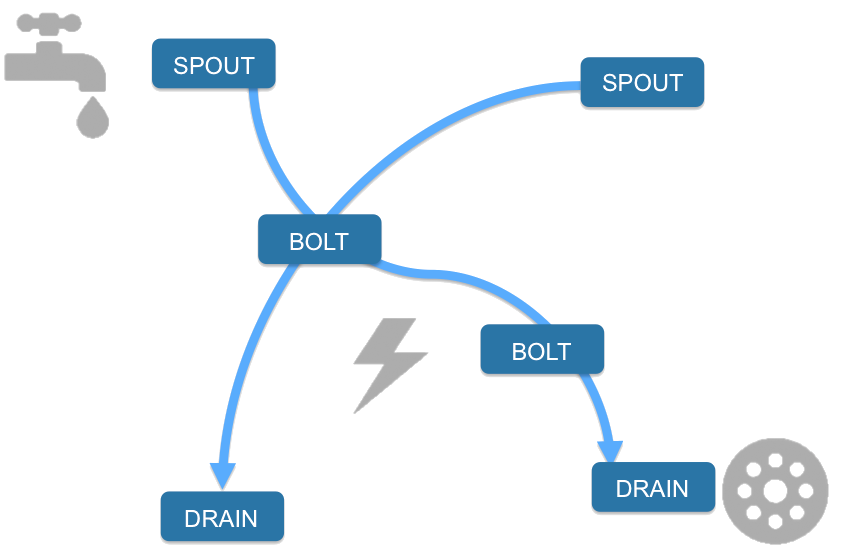

Sinfonier is simple
Sinfonier is a Change
on realtime computation systems
Sinfonier Modules
Developers welcome

Create topologies is just put together modules you need.
Creating a Bolt from scratch.
Quite simple: Drag & Drop interface joined a great technology
and a collaborative community
want to know more?
Sinfonier Community, Join Us!
Thank you for your time
Created using impress
impress.js, Try it!